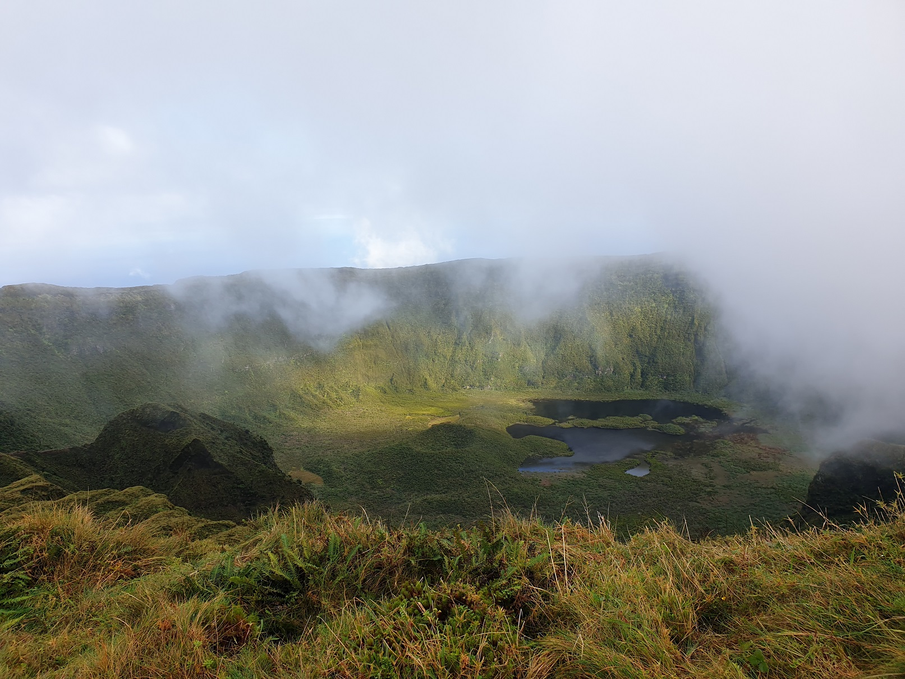
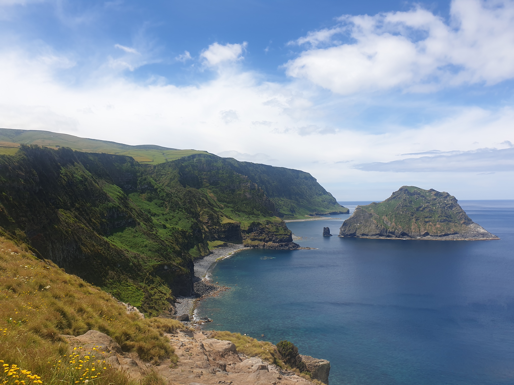
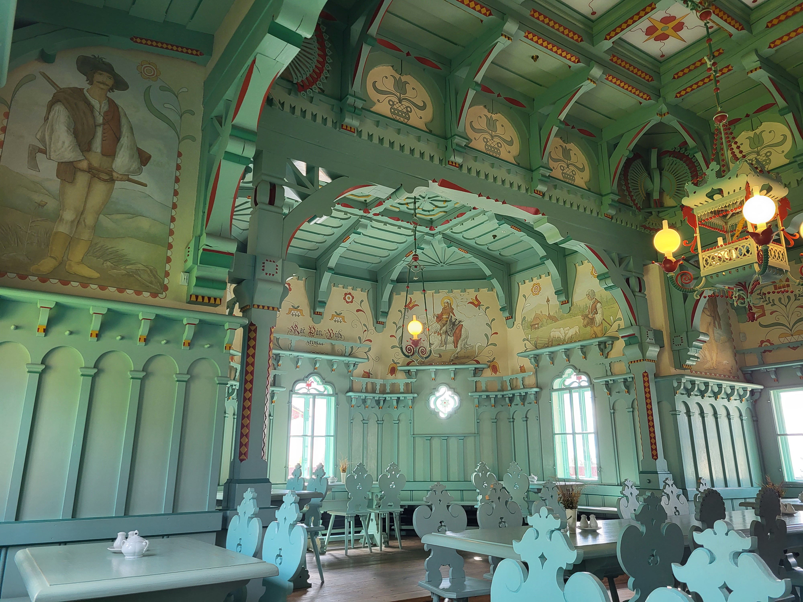
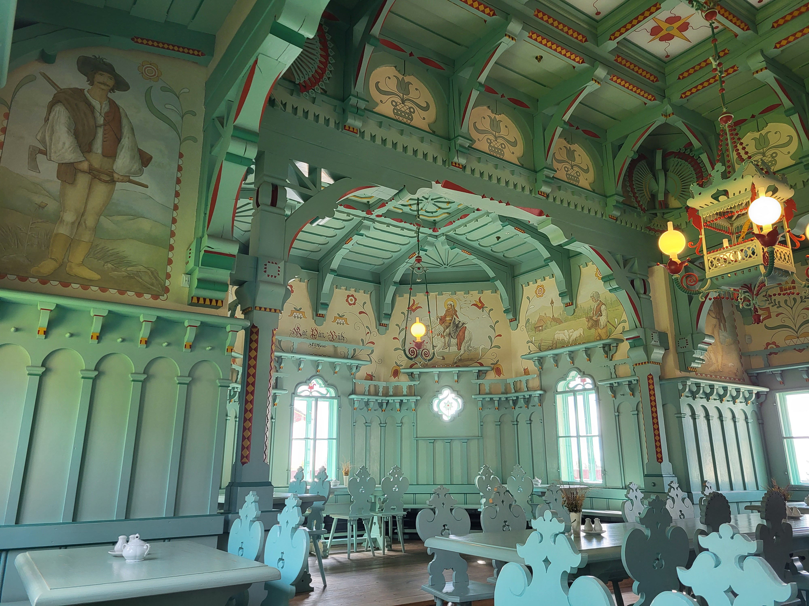

Můj pracovní život
V současné době pracuji na pozici Pracovník podpory aplikace. Jelikož se za mě v současné době hledá náhrada, tak mám možnost z inzerátu přesně popsat svou pracovní pozici v jednoduchých bodech:
- zajišťujeme podporu námi vyvíjených aplikací
- řešíme SW problémy svěřených projektů
- testujeme nové verze aplikací
- řešíme tickety 1./2. úrovně podpory
- zajišťujeme hotline pro zákazníky
- tvoříme testovací scénáře
- tvoříme uživatelskou dokumentaci
- připravujeme odborná školení
- zajišťujeme lektorskou činnost
- spolupracujeme s vývojovým týmem
Pokud bych ale měla být přesnější, tak se v současné době nejvíce zabývám testováním. Termíny dodání jsou zlé, ale je to celkem zábava.
Co se týče lektorské činnosti, tak to patří k mým oblíbeným částem práce. Tedy patřilo. Nyní se totiž nově rozděluje lektorská činnost na prezenční školení, kdy školenci přijedou, dáme si kávu, povíme si, jak to u nich na pracovišti chodí a já v 6ti hodinách ukáži jak si usnadnit práci s aplikací. Nyní se k tomuto zajetému scénáři přidalo ještě online školení. To si pustím schůzku, mluvím asi hodinu v kuse a vůbec netuším, jestli mě někdo vůbec poslouchá. Občas se stane, že si někdo omylem zapne mikrofon a ostatní slyší co nemají.
Poslední částí mé práce je řešení ticketů. Občas tuto práci s lidmi miluji, občas nenávidím. Každopádně se tam nikdy nenudím.
Jak jsem se k tomu dostala
Tady bych mohla začít už od mého dětství. Narodila jsem se do rodiny IT technika a s počítačem popřípadě s notebookem jsem se potkávala od raného dětství. Bohužel byl každý kontakt s PC brán jako bezpečtnostní riziko a přístup jsem k němu měla pouze na pár minut a za účelem hraní min nebo ve starším věku solitera. Má první (pro rodiče) pirátsky stáhnutá aplikace byla asi v 15ti letech ICQ, což jsem posléze musela svézt na bratra, který od 10ti let instaloval různé počítačové hry a bylo mu to vždy prominuto.
Po škole, která byla zaměřena ekonomickým směrem jsem se začala rozmýšlet, co budu dělat dál. V té době mě zaujal inzerát do IT firmy, kde hledali školitele pro jejich aplikace a zároveň někoho, kdo bude radit jejich zákazníků. Dle inzerátu nebylo potřeba žádné IT vzdělání a vše mě naučí.
A také mě toho hodně naučili. Musím se ale přiznat, že jsem měla chuť to vzdát. Nejvíce asi po druhém týdnu, kdy mi psal rozlobený zákazník, že mu nejde aplikace. Když jsem se šla kolegyně zeptat, jestli se na to se mnou podívá, tak ani nezvedla oči od monitoru a jen řekla: a viděla si u nich běžet "apače"? Chvíli jsem v myšlenkách vzpomínala na Vinnetoua a po chvíli mi došlo, že ne vždy dostanu vše na stříbrném podnose. V tu dobu se stal google mým nejlepším kamarádem.
Byla to velká škola a z vědomostí získaných v mém prvním zaměstnání čerpám do teď.
Jak odpočívám
Odpočinek znám pouze aktivní, což se skvěle doplňuje s mou vášní - cestování . Nerozděluji to na zahraniční a tuzemské dovolené, protože krásné to je všude. Ať tu v mém rodném kraji nebo na vzdáleném Reunionu, který jsem navštívila letos v květnu a stává se na dlouho mou poslední leteckou dovolenou.
Přidávám fotogalerii s pár tipy na dovolené:
Azorské ostrovy
Ten kdo byl pouze na hlavním ostrově Azor dle mého názoru nemůže říci, že byl na Azorských ostrovech (ikdyž je tam také krásně). Ty pravé Azory zažijete až když vyjdete Pico (nejvyšší hora Portugalska), dáte si jejich víno z kamenných vinic nebo pozorujete velryby na ostrově Flores. Jen nezkoušejte kávu z jejich vinic :-).


.jpg)


Island
O tomto ostrově slyšel snad každý a není třeba jej představovat. Ostrov je jako stvořený pro milovníky kontrastů. Hlavně nezapomenout plavky a vyhledat si nejbližší termální jezírko u ubytování.


Tenerife
V současné době se z Kanárských ostrovů stává nové chorvatsko a já se nedivím. Byla jsem zde v době coronaviru, kdy z Prahy odlétali 2 letadla za celý den a ostrov mě hodně zaujal. Od hor, přes vyhloubené tunely (nejdelší co jsem šla byl necelý km).


Alpy
Alpy jsou nádherné ve všech ročních období. Zimní Alpy, kromě svězdovek nabízí i krásné cesty na sněžnice a nebo sáňkařské dráhy. Letní Alpy mohou nabídnout i adrenalin v podobě skal a ferrat.


Reunion
Francouzký ostrov, který je ideální destinace pro aktivní lidi, kteří si po několikadenní námaze rádi užijí i relaxu se šnorchlem. Ostrov se nachází vedle známějšího Mauricia, který ovšem nenabízí tolik výletů. Jeden výlet v Cirques nám zabral 5 dní, ale odměnou nám poté bylo šnorchlování hned u břehu moře mezi korálovými útesy.

Slovenská republika
Asi každý zná Slovenské hory. Byli jste, ale někdy u našich sousedů v ráji?


Česká republika
Můj domov a asi jedno z nejkrásnějších míst, které znám. Myslím, že více netřeba dodávat.

 

Má budoucnost
Jak by řekl Yoda - nejistá má budoucnost je. Jedno je ale jisté, velice se na ní těším. V tuto chvíli odcházím ze svého zaměstnání a budu si dávat přibližně tříletou pauzu. Během těchto tří let bych chtěla stihnout nejenom vychovat budoucí generaci (i když to mi asi zabere minimálně 18 let), ale také posunout svou kariéru dále. Jestli to bude java nebo něco jiného zatím nevím. Je možné, že se mi zasteskne po testování. Každopádně už nyní mi java pomohla hodně věcí pochopit i ve své práci a znalosti z tohoto kurzu se mi neztratí.